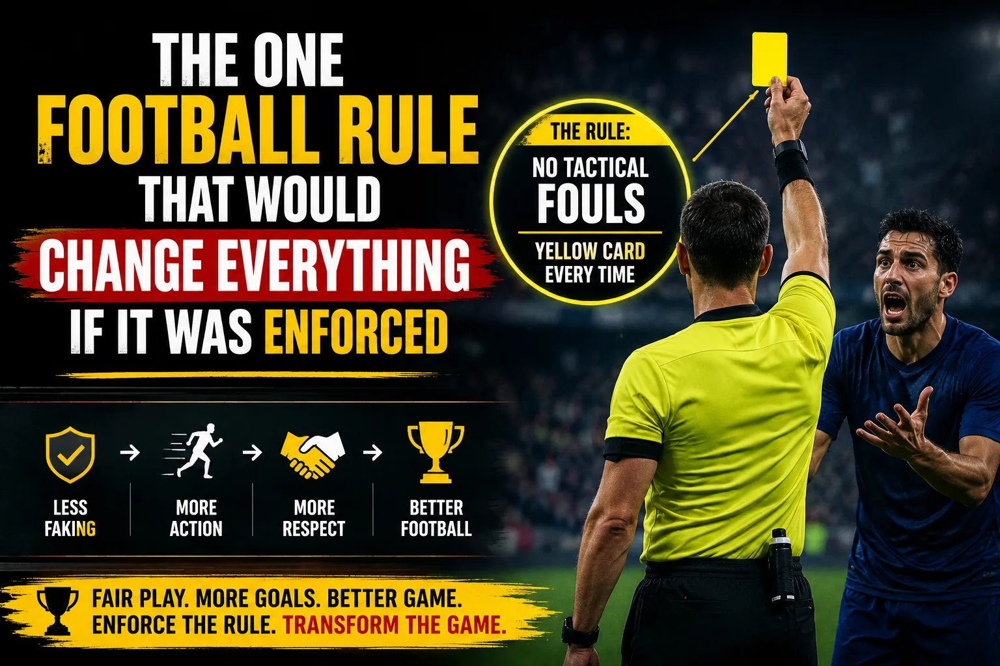

Every football fan has screamed at their television at least once. A defender cynically hauls down an attacker who is clean through on goal. The referee reaches for his pocket — and pulls out a yellow card. The free kick is taken. The attacker is denied a clear goalscoring chance. The defender stays on the pitch. The game goes on. Everyone watching knows something deeply wrong just happened.
Football has hundreds of laws written into its rulebook by The International Football Association Board (IFAB), the body that governs the Laws of the Game. Some of these rules are applied with reasonable consistency. A handball is a handball. A foul is a foul. Offside is offside. But there is one rule — the Denial of an Obvious Goal-Scoring Opportunity (DOGSO) — that is applied with such inconsistency across leagues, competitions, and even within individual matches that it arguably distorts the sport more than any other single regulation.
This article is not about offside technology. It is not about VAR. It is not about the handball rule, which has been rewritten so many times it barely resembles what it was a decade ago. This is about the one football rule change that would genuinely transform the game if it was enforced consistently: the DOGSO rule under Law 12 — and the question of whether football should return to its old standard of mandatory red cards for anyone who cynically denies a clear goalscoring opportunity.
The DOGSO rule falls under Law 12, Section 2 (Fouls and Misconduct) of the Laws of the Game. In its simplest form, it states that a player must be sent off (shown a red card) for denying an obvious goal-scoring opportunity to an opponent by a deliberate foul or handball.
The rule was designed to prevent a straightforward cynical foul from being a worthwhile trade. Without it, every last-ditch trip or shirt pull on a striker running towards an empty goal would be "good defending" — just give away a free kick and live to fight another day. The DOGSO rule was supposed to make that calculus simple: if you stop a clear goal by fouling, you lose a player AND give away the set piece.
But here is where it gets complicated. The IFAB assesses DOGSO based on four specific criteria, and all four must be present for a DOGSO red card to apply:
The problem is that these four criteria are inherently subjective. What counts as "obvious"? How many yards is too far? How many other defenders are enough to rule out DOGSO? Two referees watching the same incident can — and regularly do — come to opposite conclusions. This is where the rule falls apart.
Before the 2016-17 season, football had what was known as the "triple punishment" for DOGSO fouls inside the penalty area. If a defender fouled an attacker who was about to score, three things happened simultaneously:
This was widely viewed as disproportionate. A defender who made a genuine attempt to win the ball but arrived a fraction too late would receive the same punishment as one who cynically grabbed an opponent's shirt with no intention of playing the ball. Players, managers, and pundits argued that the rule was destroying games and punishing honest mistakes equally with deliberate cheating.
In response, the IFAB introduced a significant change ahead of the 2016-17 season. Under the revised Law 12, a DOGSO foul inside the penalty area no longer automatically results in a red card. Instead, the referee can now issue a yellow card if the player made a genuine attempt to play the ball and the offence was not a deliberate act of cheating. The red card only applies if the foul is a deliberate attempt to stop the attacker, or if the player makes no attempt to play the ball.
This change, while well-intentioned, opened up a can of worms. The distinction between "genuine attempt to play the ball" and "deliberate foul" is razor-thin in real time. A defender stretching a leg out can be simultaneously making a genuine attempt AND committing a cynical foul. The IFAB also introduced the concept that if a player commits a DOGSO foul but a penalty is awarded, the red card can be reduced to a yellow — but only if the player made a genuine attempt to play the ball. This nuance has been interpreted differently across every level of football.
Imagine a version of football where every DOGSO foul inside the penalty area resulted in a red card, no exceptions, no grey area, no referee discretion about whether it was a "genuine attempt." This is how the rule was effectively enforced for decades before 2016, and there is a compelling argument that football was better for it.
If every last-ditch foul on an attacker through on goal meant automatic dismissal, defenders would be forced to make a completely different set of decisions. Currently, a centre-back trailing an attacker by two yards with a clear view of goal faces a simple calculation: commit the foul, give away the penalty, get a yellow card, and continue. Under strict enforcement, that calculation becomes: commit the foul, give away the penalty, get sent off, and leave your team with ten men for 70 minutes.
That change in calculus would transform how teams defend in transition. Teams that currently sit deep and rely on last-ditch challenges to survive would need to restructure their entire defensive approach. The "dark arts" of defending — the professional foul, the tactical shirt pull, the tactical trip — would essentially be eliminated from the game.
Football has been trying to increase goals for years. The IFAB has experimented with penalty shootouts instead of extra time, larger goals, and even larger penalty areas. But the simplest way to increase goals would be to make it prohibitively expensive to deny them through fouls. If a striker knows that any DOGSO foul results in a penalty AND a red card, defenders will be forced to let them shoot rather than risk sending off a teammate.
Statistically, a penalty conversion rate across the top five European leagues hovers around 75-80%, according to data compiled by Transfermarkt. A penalty plus a red card is a dramatically worse outcome for the defending team than a penalty alone. If that outcome was guaranteed, you would see far fewer cynical challenges in the box — and far more one-on-one battles between striker and goalkeeper that are decided by skill rather than professional fouling.
There is a philosophical argument here too. Football's laws are supposed to reflect the spirit of the game. A player who deliberately denies a clear goalscoring opportunity is, in effect, cheating. They are using a foul to gain an advantage that the rules of football explicitly say they should not have. Making the punishment consistent — a red card every time — sends a clear message that cynical fouling will not be tolerated.
The inconsistency of DOGSO enforcement creates exploitable betting opportunities. When you understand how different referees apply the rule — and how VAR tends to intervene on DOGSO calls — you can find value in the red card market, penalty awarded market, and even over/under goals markets. Some referees are statistically more likely to give DOGSO red cards than others. Tracking referee tendencies is one of the most overlooked edges in football betting. For a deeper dive into this, see our guide on using referee statistics in betting.
To understand why this rule is so inconsistently enforced, it helps to examine exactly what referees are expected to judge in the moment. The following table breaks down the four DOGSO criteria and how they are applied in practice:
| DOGSO Criterion | What Referees Assess | Typical Threshold for Red Card |
|---|---|---|
| Distance from Goal | How many yards was the attacker from goal when fouled? | Generally within 16-20 yards of goal; further distances considered when attacker is at full speed |
| Direction of Play | Was the attacker moving directly towards the goal, laterally, or away? | Directly towards goal = strongest DOGSO case; lateral movement weakens the case |
| Likelihood of Keeping/Obtaining Ball | Was the attacker clearly going to reach the ball, or was it contested? | Clean through on goal = DOGSO; 50/50 ball = no DOGSO |
| Location and Number of Defenders | Were other defenders positioned to recover and prevent the goal? | No other defenders in a realistic recovery position = DOGSO; other defenders present = weakens the case |
The subjectivity within each of these criteria is enormous. Take the distance criterion: a striker running at full speed towards goal from 25 yards out is arguably in a more dangerous position than a striker who is static 10 yards out. But the rule does not account for speed. The direction of play criterion is also deeply subjective — a striker cutting in from the wing at a 45-degree angle toward the six-yard box might be judged as moving "laterally" by one referee and "towards goal" by another.
Football history is littered with DOGSO decisions that provoked outrage, confusion, or both. These moments illustrate exactly why the rule needs to be either strictly enforced or fundamentally rethought.
One of the most famous non-DOGSO calls in football history came during the 2012 Champions League final at the Allianz Arena. With Barcelona leading 1-0, Fernando Torres broke through on goal in the 83rd minute. Javier Mascherano, Barcelona's last outfield defender, was in pursuit. As Torres approached the edge of the penalty area, Mascherano pulled back — but the foul occurred just outside the box. The referee issued a yellow card. Torres, visibly frustrated, did not score from the subsequent free kick. Barcelona held on for a 1-0 victory. Many felt Mascherano should have been sent off even outside the box — under DOGSO rules, a red card applies anywhere on the pitch, not just inside the penalty area — but the referee judged that Mascherano had a legitimate chance of recovering. It remains one of the most debated non-calls in Champions League history.
Kyle Walker has been involved in several notable DOGSO incidents during his time at Manchester City and Tottenham. In a Premier League match during the 2020-21 season, Walker was involved in a controversial DOGSO call when he fouled an attacker who was breaking through on goal. The VAR reviewed the incident and determined that another defender was in a position to recover, so the red card was downgraded to a yellow. The incident sparked fierce debate about what constitutes "another defender in a position to recover" — was the defender genuinely in the play, or was he just on the pitch?
The introduction of VAR (Video Assistant Referee) in the Premier League from the 2019-20 season onward was supposed to bring consistency to DOGSO decisions. In practice, it has sometimes made things worse. VAR can review DOGSO calls, but the subjective nature of the four criteria means that video review often just replaces one referee's judgment with another's — and the public rarely sees the deliberation process.
There is also the issue of the "clear and obvious error" threshold for VAR intervention. A VAR official might personally disagree with a referee's DOGSO call but still decide that it was not a "clear and obvious error," allowing the original decision to stand. This creates yet another layer of inconsistency that fans and players find deeply frustrating. For more on how assistant referees and VAR officials influence matches, see our piece on how the assistant referee's flag has changed games more than VAR.
For anyone involved in football betting — whether casual or professional — the DOGSO rule has direct, measurable implications for multiple markets. Understanding how the rule is applied (and how it could change) gives you an edge that most bettors do not consider.
The over/under red cards market is directly influenced by DOGSO interpretation. If a league or competition were to adopt strict DOGSO enforcement, the average number of red cards per match would likely increase significantly. In the Premier League, the average number of red cards per match across the 2023-24 season was approximately 0.28, according to data tracked by the Premier League. Strict DOGSO enforcement could push that figure closer to 0.40 or higher, as fouls that currently result in yellow cards would instead produce dismissals.
If defenders cannot afford to make last-ditch fouls without being sent off, they will be forced to let attackers shoot. This could actually reduce the number of penalties awarded — because fewer fouls would occur in the box — while simultaneously increasing the number of one-on-one situations that are resolved by skill rather than fouling. The net effect on the penalty market is complex: fewer penalty fouls, but more open play situations. Bettors who track the penalty market should watch for rule interpretation changes in the competitions they bet on. Our penalty betting strategy guide goes into more detail on this.
More red cards mean more open games with more space for attacking players. Teams reduced to ten men after a DOGSO red card are statistically much more likely to concede additional goals. This has a direct impact on clean sheet bets and over/under goals markets. When a DOGSO red card occurs before halftime, the match average for total goals typically increases by 0.5-0.8 goals compared to the same fixture without a red card, based on historical data. Bettors who can predict or react to DOGSO situations — particularly via live betting — can find significant value in these markets.
If you are watching a match live and a DOGSO red card is given — or even a DOGSO-eligible foul that results in a yellow card — consider the following adjustments to your live bets:
For a comprehensive breakdown of card-based betting strategies, read our guide on cards betting strategy.
It would be dishonest to present only one side of this argument. There are legitimate reasons why strict DOGSO enforcement has not been universally adopted — and why many within football's governing bodies oppose it.
The primary argument against strict DOGSO enforcement is that it would penalise genuine mistakes at the same level as deliberate cheating. A defender who dives in for a tackle and mistimes it by a fraction of a second has committed a foul — but they have not cheated. They tried to play the ball and failed. Under strict DOGSO enforcement, they would be sent off, which many feel is disproportionate to their intent.
If every DOGSO foul inside the box meant a red card, some managers might instruct their defenders to simply not tackle in those situations at all. This could lead to a paradoxical outcome where defenders let attackers shoot freely rather than risk a sending-off, potentially leading to higher-scoring but less tactically interesting football. Purists argue that the current balance — where a yellow card for a DOGSO foul inside the box is a reasonable deterrent — produces the best balance between entertainment and competitive integrity.
Proponents of the current system argue that VAR has already improved DOGSO consistency. Before VAR, a referee might miss a DOGSO incident entirely or give the wrong call with no recourse. Now, at least the incident is reviewed, and the four criteria are assessed (albeit subjectively) from multiple camera angles. The IFAB has argued that the current framework strikes the right balance between strict enforcement and proportionality, and that VAR has reduced the number of incorrect DOGSO calls — even if it has not eliminated them entirely.
Understanding the history of DOGSO rule changes helps explain where we are today and where the rule might be heading:
Let us paint the picture of what football would look like under strict, zero-discretion DOGSO enforcement. Every single foul that meets the four criteria — regardless of whether the defender was "trying to play the ball" — results in a red card, a penalty (if inside the box), and a suspension.
The first thing that would change is the way teams defend in transition. Currently, many teams employ a "tactical foul" strategy when they are caught on the counterattack. A midfielder commits a foul 35 yards from goal to stop the break, takes a yellow card, and the team resets. Under strict DOGSO enforcement, this tactic becomes exponentially riskier — because if the foul is inside the box and meets the DOGSO criteria, the player is off.
Teams would need to invest far more in defensive positioning and recovery runs. The era of the "last-ditch tackle" as a heroic defensive skill would effectively end. Centre-backs would need to be faster, more positionally aware, and more disciplined than ever before. Managers who rely on deep defensive blocks — the José Mourinho, Diego Simeone school of football — would need to evolve or suffer. Simeone's Atlético Madrid, built on a foundation of intense, physical defending, would be one of the most affected teams under strict DOGSO enforcement.
Goalkeepers would see their role change significantly. Currently, goalkeepers can rush off their line and commit fouls with some impunity, knowing that the DOGSO criteria often do not apply when a goalkeeper makes a genuine attempt to play the ball. Under strict enforcement, goalkeepers would need to be far more selective about when they leave their line.
Full-backs who are caught high up the pitch and face a counterattack would be forced to make a split-second decision: track back at full speed and try to recover, or commit a foul and face almost certain dismissal. Most would choose to track back, which would mean more open space for attackers — and more goals.
Central midfielders who currently operate as the "screen" in front of the defence, committing tactical fouls to protect the back four, would find their role fundamentally altered. The professional foul in the centre circle — which is rarely a DOGSO situation — would remain, but any foul inside the penalty area would carry an enormous risk.
If we look at the data, the Premier League has averaged approximately 950-1,000 penalties per season across all competitions (Premier League, FA Cup, League Cup) in recent years. Of those, roughly 15-20% involve a DOGSO component. Under strict enforcement, many of the DOGSO-related penalties that currently result in yellow cards would instead produce red cards. That could mean an additional 100-150 red cards per season across English football's top tier — a dramatic increase from the current average of approximately 60-70 red cards per season.
The DOGSO rule sits at the heart of one of football's most fundamental tensions: the balance between punishment and proportionality. Strict enforcement would eliminate cynical fouling, increase goals, and create a more exciting spectacle. But it would also penalise honest mistakes at the same level as deliberate cheating and could fundamentally change the way the game is played.
As it stands, the current system — with its grey areas, subjective criteria, and VAR reviews — creates inconsistency that frustrates fans, players, and managers alike. But inconsistency, some would argue, is better than the alternative of a rule that is technically fair but practically transformative in ways that nobody has fully predicted.
What is clear is that the DOGSO rule will continue to evolve. The IFAB meets annually to review and update the Laws of the Game, and DOGSO is consistently one of the most discussed and debated areas. Whether future changes move toward stricter enforcement or further relaxation remains to be seen — but for now, every football fan can agree that the current state of affairs leaves a lot to be desired.
Use our Ticket Builder to create data-driven accumulators with referee statistics, DOGSO tendencies, and card market insights built right in.
Build smarter accumulators with WinFulltime's Ticket Builder. Combine match predictions, card markets, and referee data into a single, optimised betting slip.
Disclaimer: WinFulltime provides editorial content and betting insights for informational purposes only. Gambling involves risk — never bet more than you can afford to lose. Betting odds and market availability vary by region and bookmaker. Always check the latest odds and terms before placing a bet. If you or someone you know has a gambling problem, contact the National Gambling Helpline at 1-800-522-4700. WinFulltime does not guarantee the accuracy of any predictions or statistics cited in this article. The information is provided "as is" and should not be construed as financial or gambling advice.
 Win
Win